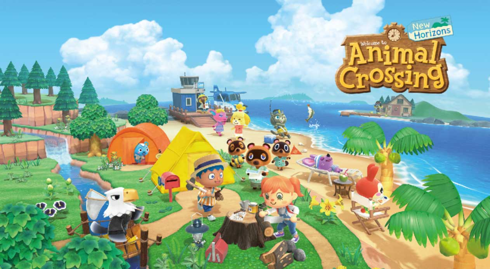

Froggy chair hits fame once again
With the Animal Crossing direct almost here people are awaiting it’s return
by Drian Gavid Bibert, 25th, Feb 2020 Tags: Switch, Animal Crossing
Having it's debut in Animal Crossing on the Gamecube, Nintendo 64 and DS, it's captured fans hearts and has been in every game since. Appearing apart of the froggy set paired with the Lily-pad table it's been the centre of attention as of late. With the Direct being played on febuary 20th, both frog emotes and the words "froggy chair" were being sent repeatedly in chat. As fans awaited the chair's reveal in the direct which didn't happen so now fans are finding more to wait for in it's release on the 20th of march a month after the direct.
While it may be a little hard for someone unfamilar with the series to understand what all the hype is about. But the chair perfectly encapsulates what Animal Crossing is about, where it's normal and fun to just wander around shooting balloons with slingshots or find dancing clay figures called Gyroids. Finding emotion and happiness in the most mundane of objects is apart of what can make it so easy to just switch on a game of Animal Crossing and just wind down, be it becoming the mayor of your town, visting a friends town or just building a snowman. We here at CO-OP all eagerly await the release of the new game and can't wait to have our own islands.
